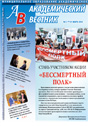

Внутригородское муниципальное образование Санкт-Петербурга муниципальный округ
Академическое
Интернет-приемная
Благоустройство
в округе
Документы
Карта
округа
Пресс-
центр
Записаться
на прием
Справочник
контактов
Мой депутат
Календарь событий
Полезные
ссылки
Еще
ВКонтакте
Facebook
Twitter
Youtube
Газета «Академический вестник»
Архив по годам:
2014
2013
2012
2011
2010
2009
2008
2007
2006
2005
2004
2003
2002
2001
2000
1999
1998
1997
1996
1995
1994
1993
1992
1991
1990
1989
1988
1987
1986
1985
1984
1983
1982

Дворец торжественной регистрации рождения «Малютка»
Дата выпуска: 10 апреля 2014
Новый формат общения: депутаты Муниципального Совета выезжают в адреса и встречаются с жителями.
Анатолий Дроздов о промежуточных итогах деятельности в представительном органе власти арссказывает депутат ЗАКСа.
Самое главное качество депутата - порядочность: о себе и о своем жизненном кредо рассказывает депутат Жанна Киселева.
Скачать выпуск
Дворец торжественной регистрации рождения «Малютка»
Дата выпуска: 10 апреля 2014
Новый формат общения: депутаты Муниципального Совета выезжают в адреса и встречаются с жителями.
Анатолий Дроздов о промежуточных итогах деятельности в представительном органе власти арссказывает депутат ЗАКСа.
Самое главное качество депутата - порядочность: о себе и о своем жизненном кредо рассказывает депутат Жанна Киселева.
Скачать выпуск
Дворец торжественной регистрации рождения «Малютка»
Дата выпуска: 10 апреля 2014
Новый формат общения: депутаты Муниципального Совета выезжают в адреса и встречаются с жителями.
Анатолий Дроздов о промежуточных итогах деятельности в представительном органе власти арссказывает депутат ЗАКСа.
Самое главное качество депутата - порядочность: о себе и о своем жизненном кредо рассказывает депутат Жанна Киселева.
Скачать выпуск
Дворец торжественной регистрации рождения «Малютка»
Дата выпуска: 10 апреля 2014
Новый формат общения: депутаты Муниципального Совета выезжают в адреса и встречаются с жителями.
Анатолий Дроздов о промежуточных итогах деятельности в представительном органе власти арссказывает депутат ЗАКСа.
Самое главное качество депутата - порядочность: о себе и о своем жизненном кредо рассказывает депутат Жанна Киселева.
Скачать выпуск
Дворец торжественной регистрации рождения «Малютка»
Дата выпуска: 10 апреля 2014
Новый формат общения: депутаты Муниципального Совета выезжают в адреса и встречаются с жителями.
Анатолий Дроздов о промежуточных итогах деятельности в представительном органе власти арссказывает депутат ЗАКСа.
Самое главное качество депутата - порядочность: о себе и о своем жизненном кредо рассказывает депутат Жанна Киселева.
Скачать выпуск
1
2
3
4
5
6
Поиск по сайту
Власть
Глава
Администрация
Бюджет
Муниципальный заказ
Социально-экономическое развитие
Интернет-приемная
Административная реформа
Муниципальная служба
Проекты
Программы
Жителям
Глава
Администрация
Бюджет
Муниципальный заказ
Социально-экономическое развитие
Интернет-приемная
Административная реформа
Муниципальная служба
Проекты
Программы
Об округе
Глава
Администрация
Бюджет
Муниципальный заказ
Социально-экономическое развитие
Интернет-приемная
Административная реформа
Муниципальная служба
Проекты
Программы
Подписка на рассылку
Подпишитесь на рассылку новостей, чтобы следить за событиями вашего района
Имя
EMAIL
Опрос
В каком виде добровольной помощи городу и району вы готовы принять участие?
Уборка придворовых территорий
Озеленение парков и садов
Помощь бездомным
Денежное пожертвование
Я не хочу помогать